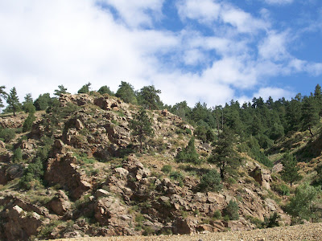
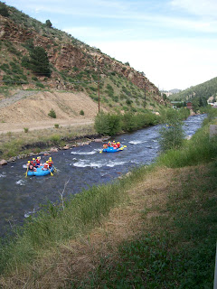
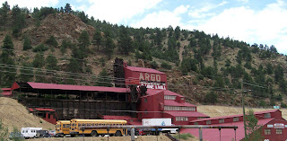
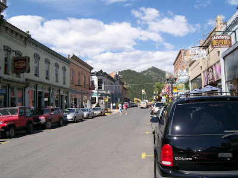

Mostly personal
7/26/2009
{kind=link}

{kind=link}

Adelia and I say a sincere "Thank You" to all of you who sent anniversary best wishes to us via comments to my blog post and/or private email. You brightened our special day!For a short but very pleasant and relaxing celebration, we drove into the Rocky Mountains to the historic mining town of Idaho Springs four a three day retreat. The photos above and to the right were taken from the back balcony of our room. Rafting is a huge Summer sport on the Colorado rivers and we enjoyed waving a greeting to the many rafters who floated down the rapidly flowing, gurgling, sparkling clear waters of aptly named, Clear Creek.
The light colored bank above the waters of Clear Creek is a portion of the mining tailings from the once very productive Argo gold mine and mill just a block up the river from where I stood to take these photos. Most of the rivers and streams in this area still produce limited amounts of gold for modern day gold panners. (Not me - I find my personal efforts are more productive when working in my shop! Besides, that water is cold - most of it comes from melting snow pack and high glaciers!)
{kind=link}


Main street (Miner Street) through Idaho Springs historic district. Most of these buildings were built 1880-1895, and nearly every building has a rich and fascinating history. Today the gold produced in this mining area is still plentiful, but it comes not from mountain diggings, but from tourism.